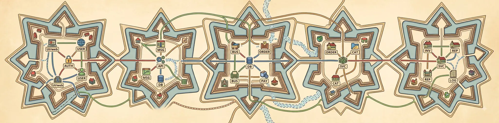
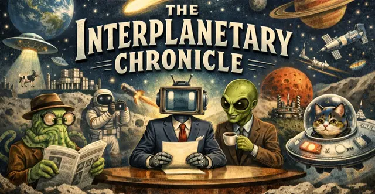
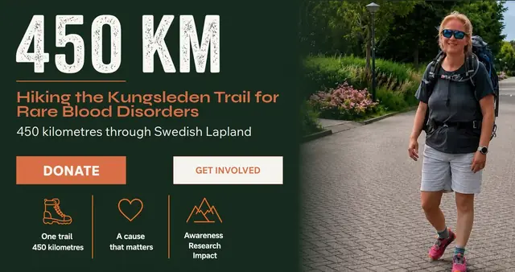
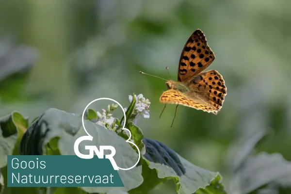

Amthonie
Software Developer & Home Automation Enthusiast
Naarden, The Netherlands
I’m Amthonie, a PHP developer living in Naarden. I work in travel technology, and in my spare time I enjoy experimenting with thoughtful home automation and spending time in nature. In both life and tech, I try to keep things local, private and sustainable, picking up new skills as I go. Over time I’ve learned to build things that provide real value, having lost enough hours on features that looked appealing but helped no one.
nihil invitus facit sapiens
necessitatem effugit, quia vult quod coactura est.
A wise man does nothing against his will; he escapes necessity because he wills what he will be forced to do.
Jottings
All jottingsThe Blocky Renaissance
Why I fell back in love with LEGO through the square, imaginative world of Minecraft.
Eva’s 450 km charity walk — €764 raised so far
My friend Eva is walking 450 km across Swedish Lapland for people living with rare blood disorders. She’s just past halfway to her €1500 goal — please chip in if you can.

Satire · Fiction
The Interplanetary Chronicle
Because reality isn’t ridiculous enough — a wholly fictional, satirical newspaper covering planetary mishaps, geopolitical misunderstandings and the occasional interstellar catastrophe, all entirely invented and regrettably plausible.
Read the ChronicleLinks

450 km sponsor walk for rare blood disorders
Support my friend’s 450 km charity walk through Swedish Lapland — an extraordinary effort she’s undertaking to help people living with rare blood disorders. Every contribution goes directly to research and support.
Stichting Zeldzame Bloedziekten (SZB)
Because rare conditions affect fewer people, they are often overlooked and underfunded. Join us in supporting those living with rare blood disorders, raising awareness and promoting research.

Goois Natuurreservaat
They maintain and protect the landscapes of ’t Gooi, the region around Naarden — keeping the woodlands, fields and drifting sands I love to walk through in good shape.
Visit Naarden
Explore the cobblestone streets of Naarden, one of Europe’s best‑preserved star‑shaped fortified towns. Learn about its rich history at the Dutch Fortress Museum, take a boat trip on the moat, or discover the nearby Naardermeer nature reserve. Afterwards, enjoy a cosy café within the ramparts or in neighbouring Bussum.
Home Assistant
Open‑source home automation with local autonomy and privacy at its core. Built and maintained by a worldwide community of tinkerers and DIY enthusiasts. I’ve been a happy user for over five years — it helps me manage my smart devices and gives me a clear picture of what’s going on at home.
NextPax Travel Technology
NextPax helps holiday homes, hotels and flats appear on booking sites worldwide. Instead of updating each site by hand, everything stays in sync automatically — giving them more bookings with far less manual work. My employer since 2017.